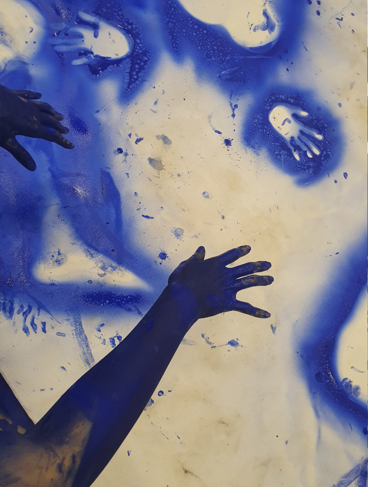

Chihiro Nodera
En obruten linje

Allting i naturen skapar en avbild. Säsongsförändringar och stormar är manifestation av naturliga former. De kommer och går. Människor följer samma regler. Människor är en avbild som naturen skapade, den föds och dör om och om igen. Varje avbild är individuell och flyktig. Men de kopplar ihop och blir till en stor ström i en obruten linje. Det är precis likadant som att årets blommor blommar likt de har blommat förut och kommer att blomma nästa år. Människor kan inte vara för evigt. Deras sjungande röst och varande kan inte vara för evigt. Men avbilden stannar kvar. Bilder som målades på sten för tiotusen år sedan har fortsatt att tala med oss. När min hand ligger på återstoden från deras händer så kommer mina tidigare minnen tillbaka med dem. Då förstår jag varför jag är här och spåren finns kvar.
Genom avbildning kan någon som inte längre existerar göras verklig. Även osynliga avbilder lämnar kvar spår från konstens ursprung.
My theme in Gibca Extended and my work’s title is “ Light draws line unendingly ”
It means that the light of art which was born in beginning of the world continues shining even now. Where did we come from? Who are we? Where are we going? People have tried forever to answer these questions and created art. Working with art goes along same road even now. I hope that one day I can understand the light and pass it to next generation.
Chihiro Nodera föddes 1987 i Tokyo, Japan. Hon studerade design och arbetade som arkitekt i Tokyo innand hon flyttade till Sverige, där hon bor sedan 2016. Hon arbetar på Ålgården och på KKV med fokus på litografi och experimentella praktiker som rör kropp och gemensamma minnen.
Chihiros Nodera´s Website